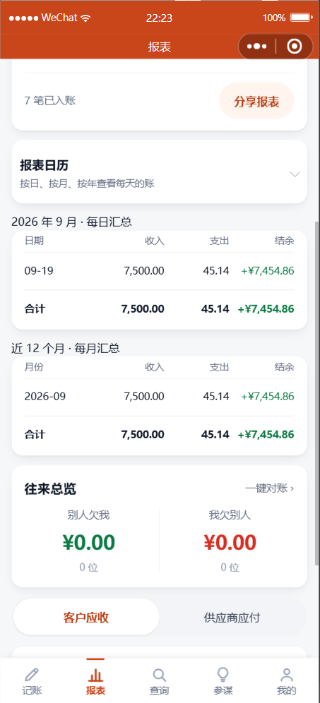
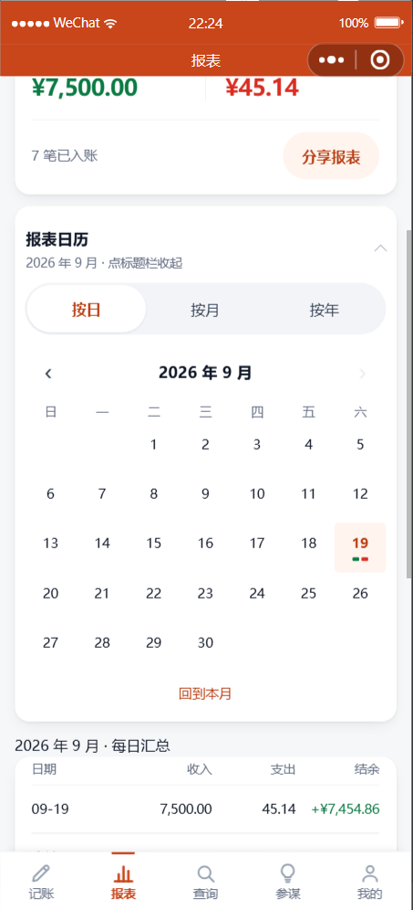

报表页改版
两个汇总表 + 一个可点开的多粒度日历 · 2026-09-19
一、你要的三件事
| 要求 | 做成了什么 |
|---|---|
| 每日汇总表 | 本月每天一行：日期 / 收入 / 支出 / 结余，末尾带合计。不列每笔明细——只有日期和数字。 |
| 每月汇总表 | 近 12 个月，每月一行，同样只给数字。 |
| 报表日历，按日 / 按月 / 按年切换 |
默认收起（你后来补的那条），点标题栏才展开。展开后三种粒度：
按日→一个月的日历·
按月→一年的 12 个月·
按年→所有年份
点任意一格，下面用大字给出那一格（那天 / 那月 / 那年）的收支和结余。
|
二、长什么样

默认收起只占一行，不挡报表
收起时也不去请求数据

点开 · 按日19 号是今天（高亮）
格底绿条＝有进账、红条＝有支出
 按月
按月一年 12 格，有数字的直接写出来
没记账的显示「—」
 点某天 + 两张汇总表
点某天 + 两张汇总表选中区给大字汇总
下面两张表只有数字、无明细
三、几个刻意的地方
| 做法 | 为什么 |
|---|---|
| 日历格子里不放金额，只放日期 + 一条彩色小条 | 一个月的日历分 7 列，每格只有 96rpx（48px 宽）——金额塞进去只能写成 10px 上下的小字， 而你根本看不清小字。所以格子里只说"这天有没有进账/支出"，金额放到下面用大字给。 |
| 不能翻到未来，翻不动时箭头是灰的 | 未来的账还没发生，翻过去只会看到一片空白，然后你会怀疑"是不是数据丢了"。 灰箭头是明明白白告诉你"到头了"，而不是点了没反应。 |
| 点一格只给汇总，不列每笔 | 这正是你要求的「不需要展示明细」——你要的是"这天收了多少支了多少"，不是再翻一遍流水。 |
| 三种粒度走同一个接口 | 如果按日、按月、按年各写一套查询，迟早出现"日历上按天加起来"和"表格里按月"对不上。 现在有一道自动检查专门盯这条：三种粒度的合计必须完全相等。 |
| 应收应付不算进收支 | 「别人欠我」是还没到手的钱，算进收入会让结余跟实际现金对不上。 这条口径和日报完全一致。 |
| 只给「结余」一列上色 | 收入、支出的表头已经写着字了，再上色只是花；而结余有正负，颜色在这里才真的有用。 |
四、验证
| 项目 | 结果 |
|---|---|
| 核心不变量：按日 / 按月 / 按年的合计完全一致 | 通过 |
| 每行「结余 = 收入 − 支出」 | 全部对得上 |
| 应收应付不计入收支 | 造了 ¥18,887 的应收应付进库，汇总里一分没算 |
| 日历日期算术（跨年、闰年、网格补齐、往返一致） | 25 / 25 |
| 分组汇总接口（含空区间 / 脏日期 / 越权 / 未登录） | 15 / 15 |
| 回归：分享 / 语音归类 / 分类统计 | 33 / 33 · 54 / 54 · 13 / 13 |
| 静态自检 / WXML / 样式 / 控制台 | 16 wxml · 17 wxss 全过 · 无报错 |
⚠️ 有一条验证第一次是"假通过"，我把它挑出来了
「应收应付不计入收支」这条，第一次跑的时候报告是绿的 —— 但我去看了一眼，
库里压根没有应收应付的数据，那个分支根本没跑到。
于是补造了两笔（应收 ¥9,999 + 应付 ¥8,888）进库，确认汇总里一分没算进去，才算是真验过。
绿色的测试不等于测到了东西。这条以后验类似的口径都要先看"库里有没有能触发它的数据"。
五、顺手修的三个东西
- 同一个页面上两个"今日/本月"式的开关，用了两套样式（一个新版、一个 68rpx 的旧版）。 已经统一成一套，顺手把高度从 36px 提到 44px —— 原来低于触控下限，容易点不中。
- 空状态里的按钮也是 38px 高（比如"去记一笔"），同样提到了 44px。 那个按钮往往是空状态下唯一的出路，点不中最要命。
- 代码自检工具的一个误报：它会把我写的比较值误当成样式名。 已修好，并用故意写错的样本回归验证了它仍然能抓出真问题。
有一件事我差点误判：日历一度显示成「2024 年 9 月」，我以为是翻页算错了。
先跑了纯函数测试（25 项全对），再做一次干净复现（往前翻三次：9→8→7→6 月，回到本月正确），
才确认那是"刚改完代码、工具热更新时读到中间值"造成的假象，不是产品的问题。
这类事今天发生了两次（另一次是"页面刚跳转完就截图，拿到的是上一页"）。 所以定了一条规矩：改完代码要重新加载再看，看到异常先做干净复现，再决定改不改。
这类事今天发生了两次（另一次是"页面刚跳转完就截图，拿到的是上一页"）。 所以定了一条规矩：改完代码要重新加载再看，看到异常先做干净复现，再决定改不改。